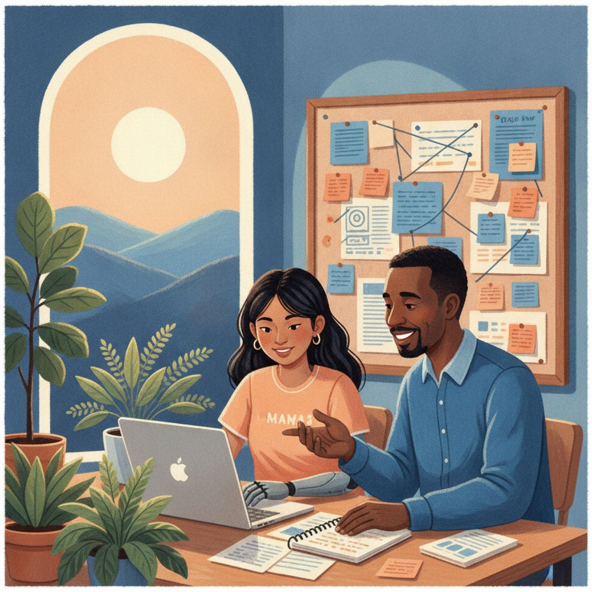
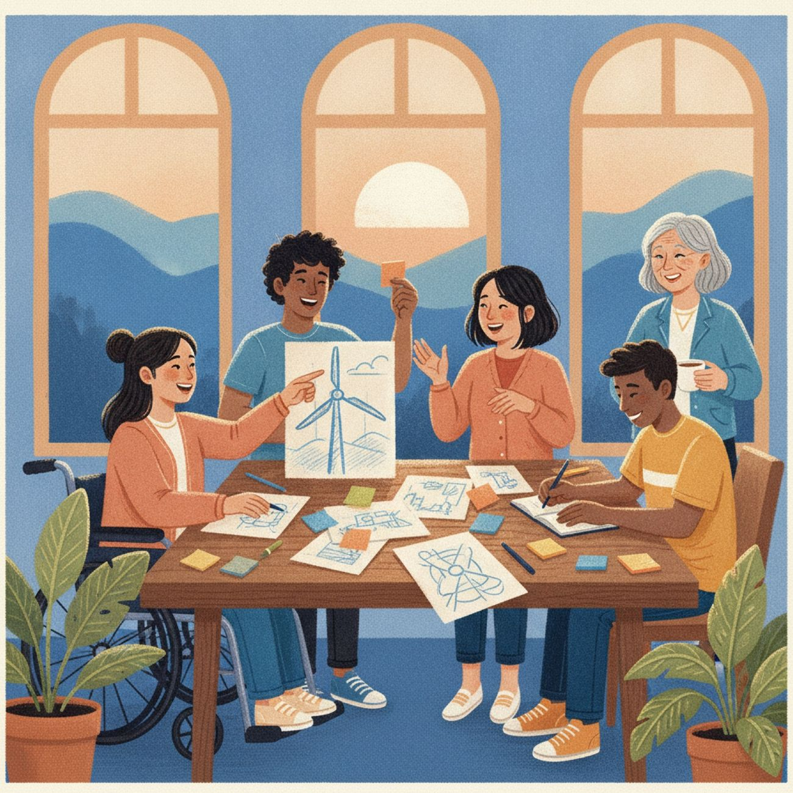

一个由学生发起、边界清楚的社群项目A student-led community project with clear boundaries
基于可信公共资料的科普与资源导航，关注自闭症人士在教育、社区和就业中的真实需要。Plain-language information and resource navigation, built on trusted public sources, for autistic people's real needs at school, in the community and at work.
我们不提供医疗诊断、治疗方案或紧急服务。We don't provide medical diagnosis, treatment plans or emergency services.

用自己能做到的方式，搭一座桥Building a bridge, one doable step at a time
我是一名在美国就读的高中生。我希望为自闭症社群建立一个容易理解、可以参与、来源清楚的平台。
I'm a high-school student in the U.S. I wanted to build something for the autism community that's easy to understand, easy to join, and always clear about its sources.
因为我是学生，涉及医疗、法律、儿童安全、资金和商品交易的事项，都由成人指导人或合格合作方审核。
Because I'm a student, anything involving medical or legal matters, child safety, money or sales is reviewed by an adult advisor or a qualified partner.
支持自闭症人士更平等地参与学校、社区和工作，并尊重他们对称呼、沟通方式和支持目标的选择。Helping autistic people take part more equally in school, community and work — while respecting their own choices about language, communication and support.
可信科普Trustworthy information
具体志愿任务Concrete volunteer tasks
资源导航Resource navigation
透明商品展示A transparent shop
五条我们自己遵守的规则Five rules we hold ourselves to
引用原始资料Cite original sources
引用官方和可信原始资料，保留链接与更新日期。Official and trusted sources, with link and update date.
邀请本人参与Ask the people it's about
请自闭症人士和家庭审阅与其生活相关的内容。Autistic people and families review content about their lives.
先取得授权Get consent first
发布个人故事、照片或作品前取得明确授权。Clear permission before publishing any story, photo or work.
公开资金流向Show where money goes
公开销售方、合作关系、公益金额和支出。Sellers, partnerships, charitable amounts and spending disclosed.
及时更正Fix mistakes openly
及时修正错误，并记录重要修改。Errors corrected promptly; significant changes logged.

本项目不是诊所、治疗中心、学校、法律服务机构或紧急援助机构。We are not a clinic, a treatment centre, a school, a legal service or an emergency service.
- 我们不诊断自闭症。We don't diagnose autism.
- 不制定个人治疗或教育方案。We don't create individual treatment or education plans.
- 不保证商品、岗位或外部机构的结果。We don't guarantee outcomes from products, jobs or outside organisations.
- 不接受志愿者以本站名义提供私人咨询。We don't allow volunteers to offer private counselling or advice in MindBridge's name.
常见问题Common questions
没找到答案？请联系我们。Not answered here? Contact us.
这个网站提供自闭症诊断吗？Does this site diagnose autism?
不提供。诊断和个人医疗建议应由合格的医疗专业人员提供。
No. Diagnosis and personal medical advice should come from a qualified healthcare professional.
网站上的数据来自哪里？Where do the numbers on this site come from?
每条数据注明来源、范围和年份，优先引用CDC、NIH、WHO、美国教育部和劳工部等官方页面，并定期复查。
Each statistic lists its source, population and year. We cite official pages first (CDC, NIH, WHO, U.S. Departments of Education and Labor) and re-check them regularly.
谁可以成为志愿者？Who can volunteer?
任何社区成员都可以申请。每项任务会说明年龄、技能、时间和成人监督要求。
Anyone in the community can apply. Each task lists its age, skill, time and adult-supervision requirements.
志愿者可以提供心理咨询吗？Can volunteers provide counselling?
不可以。除非由有执照的独立机构正式提供并承担责任，志愿者不得诊断、治疗或开展私人咨询。
No. Unless formally provided by an independent, licensed organisation that takes responsibility, volunteers may not diagnose, treat or counsel.
购买商品等于捐款吗？Is buying something the same as donating?
不一定。商品页面会说明销售方和资金分配；只有符合规则并明确说明时，才可能属于可抵税捐款。
Not necessarily. Product pages show the seller and how money is shared; a payment is tax-deductible only when the rules are met and this is stated clearly.
如何知道公益金额去了哪里？How do I know where the charitable money goes?
相关商品标明金额或比例及受益方。我们发布汇总记录，不公开顾客或创作者的私人信息。
Products show the amount or percentage and who benefits. We publish summary records without anyone's private information.
可以提交个人故事或照片吗？Can I share a personal story or photo?
可以申请。发布前须确认本人意愿、使用范围和撤回方式；未成年人内容需监护人同意，并尽量减少可识别信息。
Yes, you can ask. We first confirm consent, how it's used and how to withdraw it. Content about minors needs guardian consent and minimal identifying details.
网站如何称呼自闭症群体？What language does the site use to describe autistic people?
人们偏好的称呼不同。我们尊重当事人的选择，不强加统一称呼。
People prefer different terms (“autistic person”, “person with autism”…). We respect each person's choice.
网站上的外部链接代表推荐吗？Does an external link mean you recommend it?
不代表。请自行核验机构、费用、资质和隐私规则。
No. Please check the organisation, costs, qualifications and privacy rules yourself.
发现错误或不安全内容怎么办？What if I find a mistake or something unsafe?
请附页面地址发送至纠错或安全邮箱。涉及紧急危险时，请联系当地紧急服务。
Email our corrections or safety address with the page link. If someone is in immediate danger, contact local emergency services.
我们能做什么、不能做什么，都写在这里What we can and can't do — all in one place
适用于全站。正式隐私政策将经熟悉相关法律的成人复核后发布。These apply site-wide. A full privacy policy will follow after review by an adult familiar with the law.
医疗免责声明Medical disclaimer
本站内容仅用于一般科普和资源导航，不构成医疗诊断、治疗、心理咨询或专业意见。请咨询合格的医疗、教育、法律或社会服务专业人员，不要因本站内容推迟或停止已有的专业支持。Everything here is general information and resource navigation — not medical diagnosis, treatment, counselling or professional advice. Consult qualified medical, education, legal or social-service professionals, and never delay or stop professional support you already receive because of this site.
美国危机帮助提示Crisis help in the U.S.
本站不提供危机干预。立即危险请拨打911；在美国，自杀或严重情绪危机可拨打或短信联系988 Suicide and Crisis Lifeline。其他地区请联系当地紧急服务或危机热线。This site does not provide crisis support. For immediate danger, call 911. In the U.S., call or text the 988 Suicide and Crisis Lifeline for suicidal thoughts or severe emotional crisis. Elsewhere, contact local emergency services or a crisis line.
988lifeline.org简明隐私说明Privacy in brief
我们只收集完成明确任务所需的信息（如回复邮箱、志愿申请或订单信息），不要求公开诊断报告、学校文件或医疗记录，也不出售个人信息。We collect only what a specific task needs (e.g. a reply email, volunteer application or order details). We never ask you to share diagnostic, school or medical records publicly, and never sell personal information.
每个收集信息的页面都会说明收集内容、用途、保存期限、服务商、删除方式和联系人；正式政策还将涵盖Cookie、分析、支付、邮件工具和第三方链接。Each form states what's collected, why, how long it's kept, which providers are involved, how to delete it and whom to contact. The full policy will also cover cookies, analytics, payments, email tools and third-party links.
未成年人信息说明Children's information
在完成年龄和家长同意流程前，本站不收集13岁以下儿童的姓名、邮箱、电话、照片、声音、位置、持久标识符或其他受保护的个人信息。Until an age check and parental-consent process is in place, we don't collect names, emails, phone numbers, photos, voice, location, persistent identifiers or other protected personal information from children under 13.
面向13岁以下儿童或知情收集其信息的网站，可能须遵守美国Children's Online Privacy Protection Act及FTC的COPPA规则，适用要求由成人和合格法律顾问确定。Sites aimed at under-13s, or that knowingly collect their data, may need to comply with the U.S. Children's Online Privacy Protection Act and the FTC's COPPA Rule; adults and qualified legal counsel decide what applies.
FTC COPPA 合规六步指引FTC COPPA six-step plan社区发布规则Community rules
请尊重他人的身份、沟通方式和边界。不要发布诊断文件、住址、学校日程、私人联系方式或未经许可的照片。不要提供医疗诊断、宣传未经证实的疗法、攻击他人或利用社群成员进行推销。Please respect other people's identities, ways of communicating and boundaries. Don't post diagnostic documents, home addresses, school schedules, private contact details or photos without permission. Don't offer medical diagnoses, promote unproven therapies, attack others or use community members as sales targets.
违规或可能造成伤害的内容会被删除；涉及儿童安全或违法风险的交由成人负责人处理。Content that breaks these rules or could cause harm may be removed; child-safety or legal issues go to a responsible adult.
资料引用与机构背书说明Citations are not endorsements
引用或链接不表示CDC、NIH、WHO、美国政府、联合国或其他机构认可、赞助或推荐本项目、商品或合作伙伴。未经授权不使用任何机构标志；图片、图表、视频和个人故事发布前均核查版权与授权。A citation or link does not mean the CDC, NIH, WHO, the U.S. government, the UN or any other organisation approves of, sponsors or recommends this project, its products or partners. No organisation's logo is used without permission, and images, charts, videos and stories are checked for copyright and consent before publishing.
每个页面都按这七条来检查Every page is checked against these seven points
- 保持页面结构和导航一致，标题说明页面目的。Keep page structure and navigation consistent, with headings that say what each page is for.
- 使用清楚、具体、容易理解的语言，并解释缩写。Use clear, concrete, easy-to-understand language, and explain abbreviations.
- 不自动播放音乐、视频或快速动画，避免闪烁内容。No autoplaying music, video or fast animation, and nothing that flashes.
- 为图片提供替代文字，为视频提供字幕或文字稿。Give images alt text, and give videos captions or transcripts.
- 确保键盘可以完成导航、表单和结账操作。Make sure navigation, forms and checkout all work with a keyboard.
- 表单一步一项，错误提示说明如何修正，不设置过短超时。One thing per step in forms, error messages that explain how to fix them, and no short time-outs.
- 提供足够的文字和背景对比度，不只依靠颜色表达信息。Provide enough contrast between text and background, and never rely on colour alone to convey meaning.
按你的方式阅读Read your way
右上角的无障碍按钮可调整字号、开启平静模式或切换深色界面。Use the accessibility button (top right) for text size, calm mode or dark theme.
资料来源：W3C 认知和学习无障碍Source: W3C Cognitive Accessibility我们从哪里找资料，又怎样保持更新Where our information comes from — and how we keep it current
优先链接原始机构，并标明核验日期。We link to the original organisation and note when we last checked.
| 来源Source | 建议用途What we use it for | 原始链接Original link |
|---|---|---|
| CDC 自闭症数据CDC autism data | 美国 ADDM 监测数据；1 比 31 数据的原始页面U.S. ADDM monitoring data; the original page for the 1-in-31 figure | cdc.gov |
| NIMH 自闭症资料NIMH on autism | 定义、评估、服务与支持Definitions, evaluation, services and support | nimh.nih.gov |
| WHO 自闭症资料WHO autism fact sheet | 全球估计、个体差异与社会支持Global estimates, individual differences and social support | who.int |
| 联合国自闭症关注日UN World Autism Awareness Day | 4 月 2 日和包容倡议2 April and the push for inclusion | un.org |
| 美国教育部 IDEA 家长资源U.S. Dept. of Education — IDEA | 教育权利和家庭资源Education rights and family resources | sites.ed.gov/idea |
| 美国教育部家长信息中心Parent Training & Information Centers | 查找各州支持中心Finding your state's support center | parentcenterhub.org |
| 美国劳工部自闭症就业资源U.S. Dept. of Labor (ODEP) | 招聘、合理便利和就业支持Hiring, workplace accommodations and employment support | dol.gov/agencies/odep |
| W3C 认知无障碍W3C Cognitive Accessibility | 网站内容和交互设计Website content and interaction design | w3.org/WAI |
| FTC 儿童隐私指引FTC children's privacy guidance | COPPA 适用判断和合规步骤Whether COPPA applies, and steps to comply | ftc.gov |
| FDA 自闭症虚假疗法警示FDA warnings on false autism treatments | 不可靠治疗产品和健康宣传Unreliable treatment products and health claims | fda.gov |
| FTC 健康宣传FTC health-claims guidance | 商品健康功效证据要求Evidence needed for product health claims | ftc.gov |
| IRS 免税组织查询IRS Tax Exempt Organization Search | 核验组织是否可接收可抵税捐款Checking whether an organisation can receive tax-deductible donations | irs.gov |
| CDC 材料使用规则CDC use of agency materials | 文字、图片和标志的使用条件Conditions for using text, images and logos | cdc.gov |
| 988 Suicide and Crisis Lifeline988 Suicide and Crisis Lifeline | 美国危机支持Crisis support in the U.S. | 988lifeline.org |
本表最近核验日期：2026年9月Table last verified: September 2026
资料更新流程How we update information
找原始页面Go to the original
政府、公共卫生、教育或研究机构的原始页面。The original government, health, education or research page.
完整记录Record the details
标题、机构、地址、数据年份和核验日期。Title, publisher, URL, data year and check date.
用自己的话改写Rewrite in our own words
保留人群、时间范围和不确定性。Keeping population, time frame and uncertainty intact.
事实与观点分开Separate fact from opinion
个人经历须取得发布授权。Personal experiences need permission to publish.
定期复查Check regularly
核心数据、链接和政策页面至少每六个月复查。Core stats, links and policy pages at least every six months.
记录更新Log every update
注明更新日期，不保留过期数字作宣传。Note the date; never keep outdated numbers for promotion.
标准来源标注格式How we cite a source
我们按以下格式标注：We cite sources in this format:
- 资料来源Source
- 美国疾病控制与预防中心U.S. Centers for Disease Control and Prevention
- 页面标题Page title
- Data and Statistics on Autism Spectrum Disorder
- 数据年份Data year
- 2022
- 最近核验日期Last verified
- 2026年9月10日10 September 2026
- 原始链接Original link
- 见页面On the page
CDC大部分文字属公共领域，但须注明来源且不得暗示政府背书，其标志和部分图片不能自由使用。其他机构、媒体和论文一律自行改写并链接原页，不复制长段文字、图表、照片或标志。Most CDC text is public domain, but requires attribution and no implied endorsement; its logo and some images aren't free to use. For other organisations, media and papers we rewrite in our own words and link the original — never copying long passages, charts, photos or logos.
有问题、发现错误，或想一起参与？A question, a correction, or want to get involved?
咨询和纠错请用公开邮箱；订单问题请联系商品页所列销售方；涉及隐私、儿童安全或紧急风险，请同时联系成人指导人或当地紧急服务。Questions and corrections: public email. Orders: the seller on the product page. Privacy, child safety or urgent risk: also contact our adult advisor or local emergency services.
从一件具体的小事开始Start with one small, concrete thing
核验资料、改善网页、协助活动——均有成人监督。Check a fact, improve a page, help at an event — with adult supervision.